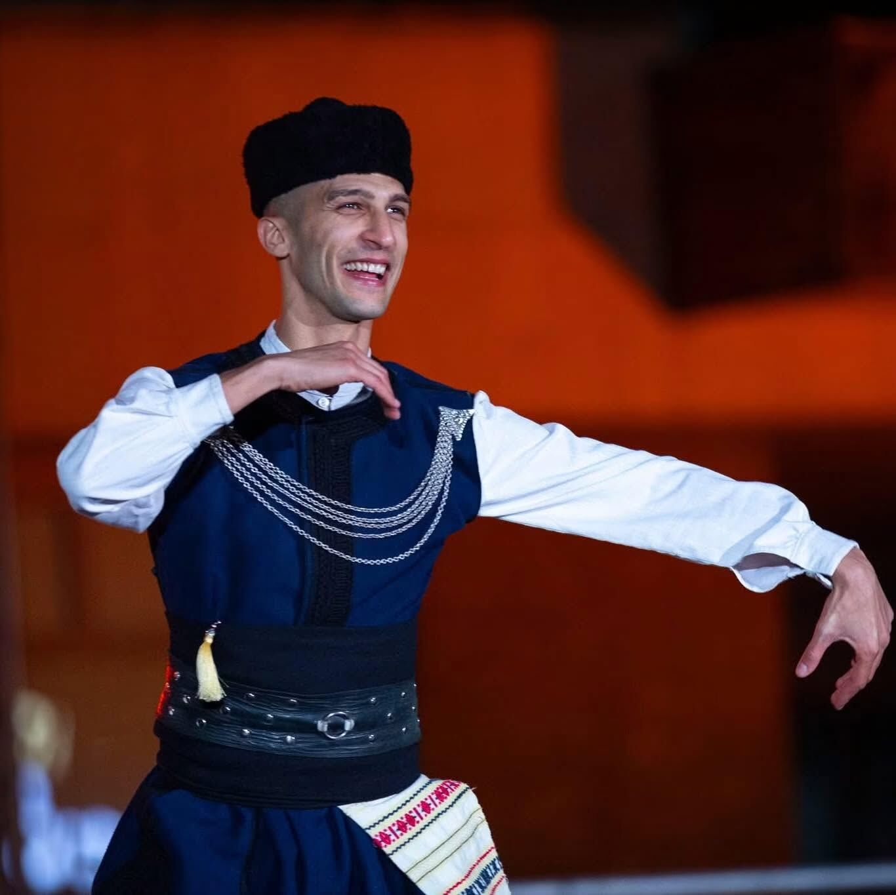
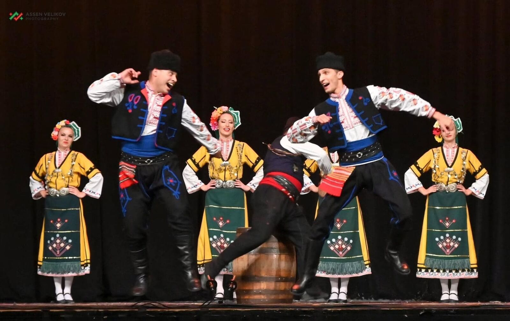
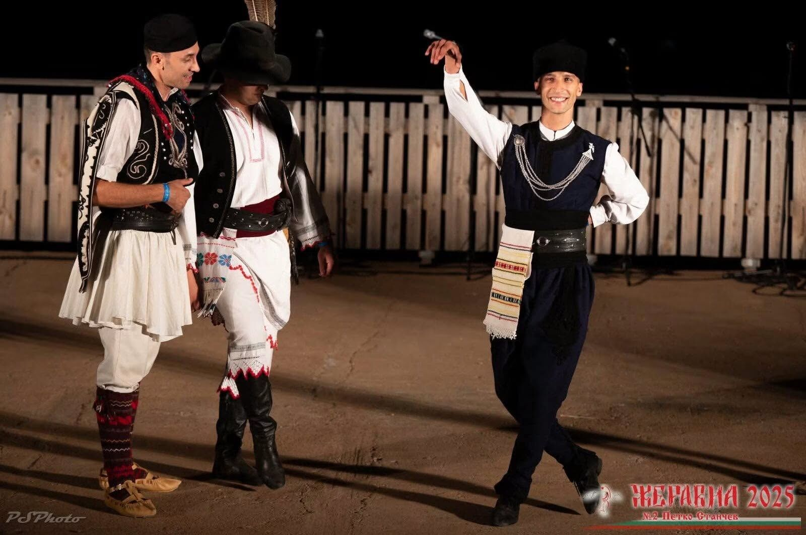
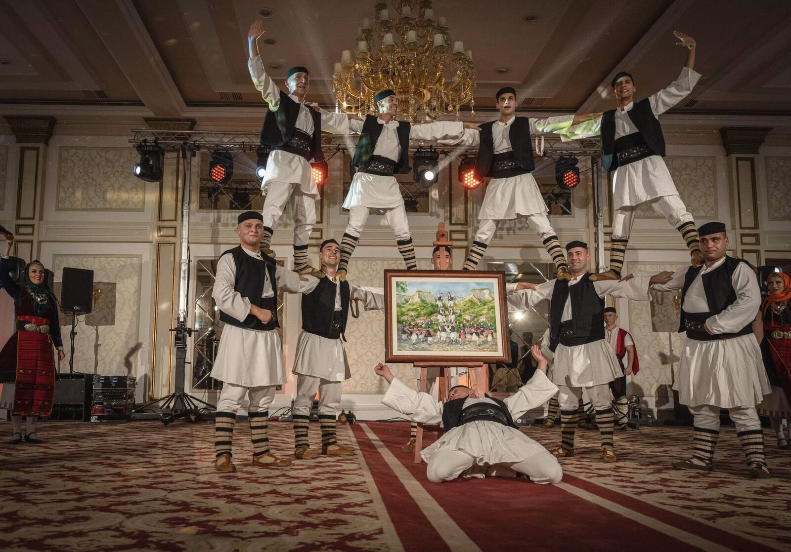
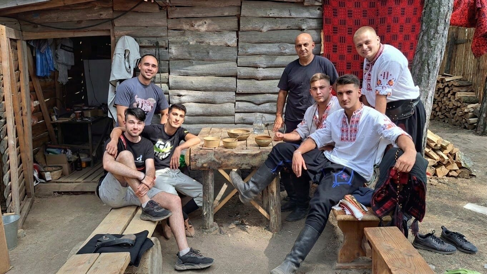

0
години приятелство, доверие и рамо в трудни моменти.
Ти държиш фронта. Когато наоколо е хаос, ти си спокойствието.
Тази вечер на сцената
Венелин Станчев
Повече от колега. Човек, на когото винаги можеш да разчиташ.

Наследството
години приятелство, доверие и рамо в трудни моменти.
Ти държиш фронта. Когато наоколо е хаос, ти си спокойствието.
Спокоен, когато другите се паникьосват. Помага на всеки, без да чака нищо в замяна. Просто защото е такъв.
споделени кафета, разговори и смях, които направиха всеки ден на работа по-човешки.
„От всикуту най-хубууту.“
„Дайте Дидо стой.“
Първо спокойствие. После всичко останало.
Излез и се забавлявай. Сцената ще те усети.
Спомени

Бурето
Тракийската картина. Емоцията, заради която исках да танцувам.

Жеравна
Там, където се чувствах на сигурно. Защото ти беше до мен.

Заедно, нагоре
Един държи, другите се качват. Знам кой беше основата.

Масата
Където винаги има място. И винаги ще има.
За всеки случай
Не е за сега. Запази го за после.
Където и да си, каквото и да става, знай едно: имаш на кого да звъннеш. При мен винаги има място за теб на масата, кафе, което те чака, и рамо, на което да се облегнеш.
Не си сам, батко.
Златна карта
БАТИ ВЕНКО
Едно писмо
Венко, искам да ти споделя няколко неща. Ще започна от самото начало.
Когато реших, че искам да бъда танцьор и да превърна това в моя професия, видях теб. Беше на концерт в Бургас и се играеше „Това е България“. В тракийската картина ти беше качен на бурето. Тогава видях тази емоция, наслада и чувство. От тогава си казах, че искам да приличам и да танцувам като теб.
Тогава не знаех името ти, не знаех кой си и какъв си. Но винаги в съзнанието ми излизаш ти, като чуя „Българе“.
Реших се да се явя на кастинг. Преди да изляза пред вас, си представях точно теб от концерта, на бурето. Изпълних се с емоция и излязох да се забавлявам. Всичко вървеше добре до един момент, в който те видях насълзен. За мен вече нищо нямаше значение. Аз бях доволен. Човекът, който е моя идол, ме оцени.
И после разговорът, който имахме с теб… Леле. Беше нещото, което ме надъха. След този момент ти не беше просто моят идол. Ти се превърна в човека, на когото имам най-голямо доверие. Човека, за когото аз ще обърна света на 360 градуса.
На Жеравна аз се чувствах много добре. Защото чувствах твоята подкрепа и закрила.
Ти си невероятен човек. Не случайно те наричам Бати Венко. Наричам те така, защото съм те приел като батко.
Не знам защо реши точно на мен да ми подадеш ръка. Не знам с какво съм те спечелил и какво си видял в мен. Но ти благодаря.
Благодаря ти, че си част от моя живот.
Благодаря ти за подкрепата.
Благодаря ти за доверието.
Благодаря ти за вярата в мен.
Благодаря ти, че си до мен.
Благодаря ти, че мога да разчитам на теб.
Благодаря.
И знай, че където и да те отведе животът, винаги ще бъда насреща. За помощ, за подкрепа или просто да си поговорим.
Защото ти си просто
Бати Венко
С обич,